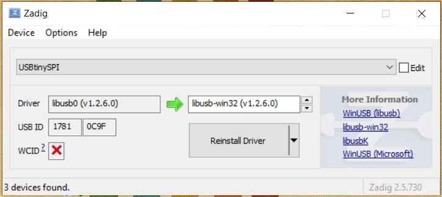
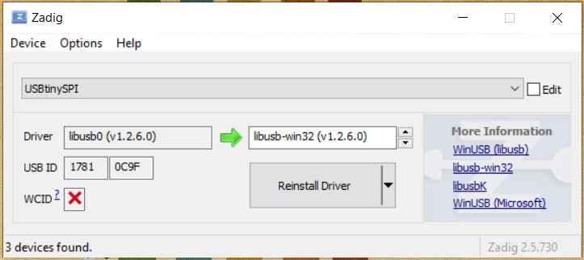
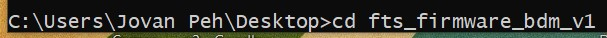
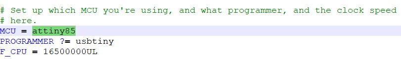
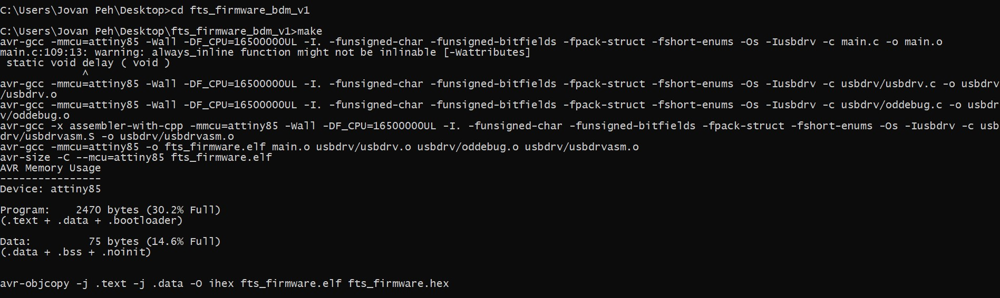
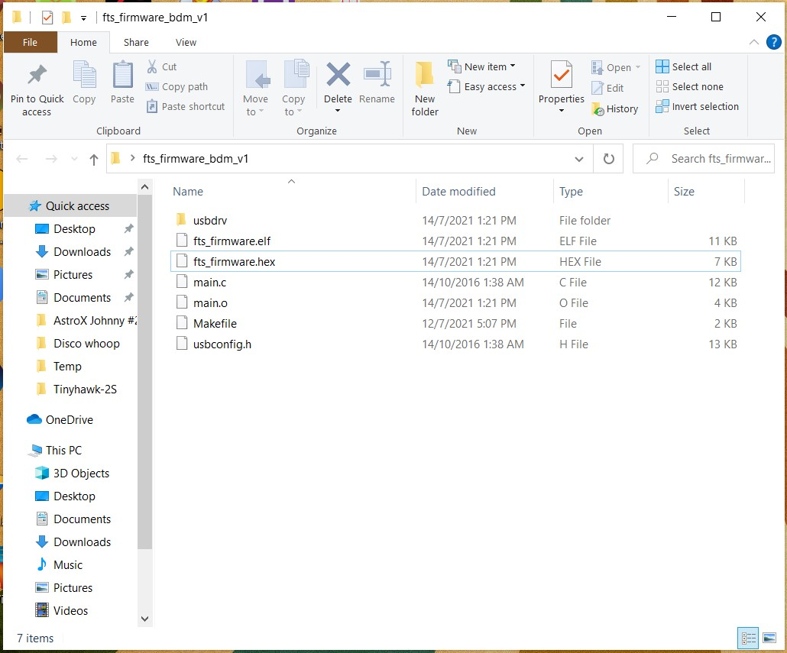
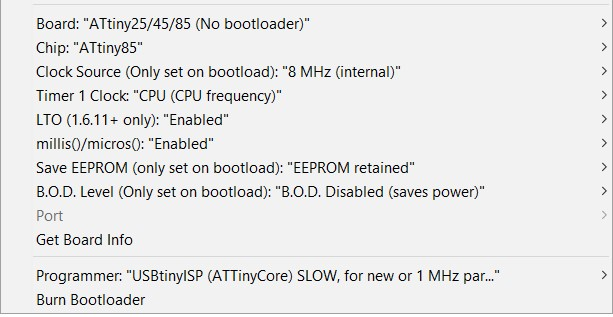

Embedded Programming
 

Add cmd build steps
selecting directory (cd)

flashing initial firmware
blowing reset fuses (changing reset pin into io pin)
Configuring the makefile for flashing the tiny85:

Making the hex file that will be flashed onto the programmer:

After using the make command, i am left with this hex file in the firmware directory.

Configuring arduino IDE for hello board (no com port)

Doing blink and switch test (switch has pull up resistors)